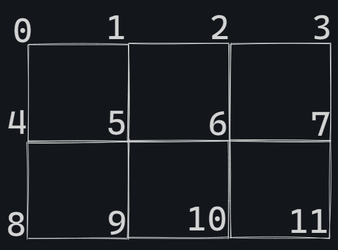
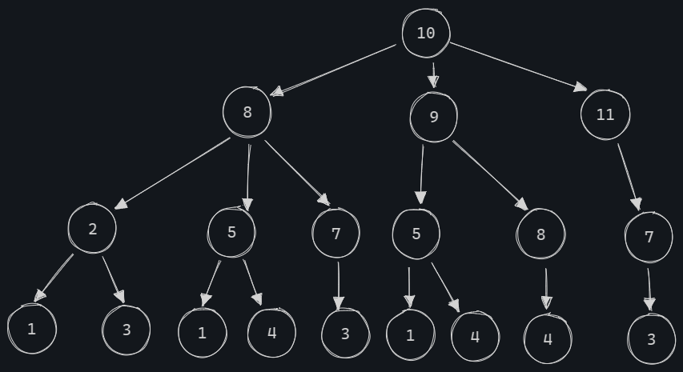
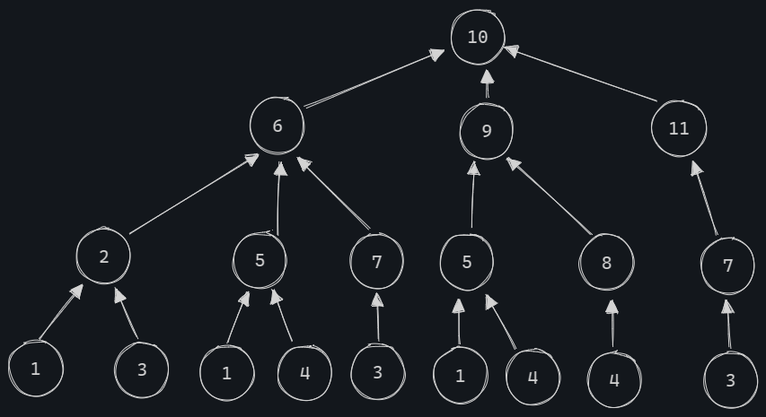
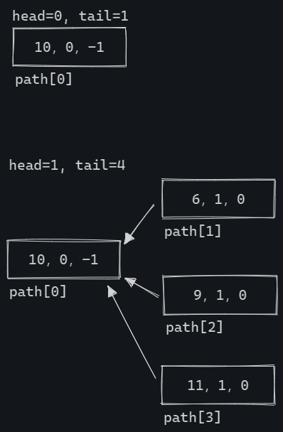
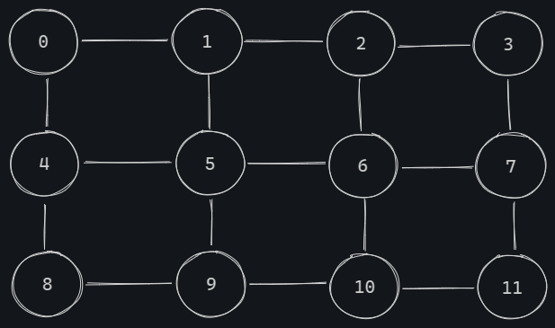

前言
这道题很有意思，考察了数据结构树，并且以一个很经典的问题——最短路径问题为背景，这在算法竞赛中是喜闻乐见的。相较于以往各种包浆的用链表解决实际问题的题目，这道题要清爽多了。
这篇文章不放完整原题干，打字太烦。😃
(1)题
该题考查学生的逻辑思维能力。
init函数需要返回所有顶点的相邻顶点。这里的相邻顶点的定义可以根据第15题图b推断得到，即在一个顶点的上下左右的顶点为该顶点的相邻顶点，在对角位置的顶点不算相邻顶点。
源代码如下：
1 | def init(m, n): |
不难发现，这里确定相邻节点需要判断边界。
i > m时，即i不在第一行，则必有一个顶点在它头上。
i < (m+1)*n时，即i不在最后一行，则必有一个顶点在它底下。
i%(m+1) != 0时，即i不在最左边，则必有一个顶点在它左边。
i%(m+1) != m时，即i不在最右边，则必有一个顶点在它右边。
故该空填：lst[i].append(i+1)。
(2)题
该题考查对树的认识，以及细心程度:)
估计很多考生对着给出的树就填了个3。实际不是。
题目很心机地没有给全顶点7所有的相邻顶点，细心的你如果仔细观察，会发现顶点7还有一个相邻顶点：6。

因此到达顶点11的路径还有一条：4-5-6-7-11。
因此答案为：4。
(3)，(4)题
先看(3)题。
1 | '''(3)''' |
题目规定：
path[i][0]保存顶点的编号，path[i][1]保存当前顶点到终点的距离，path[i][2]保存下一顶点在path中的位置，其值为-1表示当前顶点为终点。
这里说的最不清楚的，就是path[i][2]。path[i][2]到底指向哪个顶点？显然，这是出题者的诡计，他想在这里拷打我们。
这个问题暂时不谈。
题干又有一句话：
可采用链表结构保存路径数据。
而path[i][2]保存的就是地址。再看(3)题的代码，长得像不像遍历链表？
遍历到什么时候截止？当然是遍历到终点截止咯。
那就是path[i][2] == -1的时候吧？
所以该空填：v[2] != -1。
接着看(4)题。
1 | '''(4)''' |
①是最好解决的，显然是一个初始化。看下来就found没有被声明。
因此①：found = False。
②，③显然有难度。这时候我们需要去推断出它的算法，而不是看着代码硬解。
大的要来了
算法梳理
我们总结一下题目给出的数据结构和算法。
- 数据结构：
- 链表
- 算法：
- 枚举算法
这很容易看出来。
它要枚举什么？
- 枚举出所有路径，然后找到最短的那几条路径。
那么，它是怎么枚举的？
- 根据(2)题可知，题目是逆向思维，由终点去找起点。查找终点的所有相邻顶点，之后再由每个相邻顶点去找其相邻顶点，不断循环下去。直到找到起点。
这意味着该链表中的每个节点要指向多个节点，对吧？
可是一个顶点有多个相邻顶点啊！而且题目中规定的path中的节点也只指向一个节点啊！
那么每个节点只能指向一个节点，这个节点该指向谁呢？
不要急，我们再看一下(2)题给的图。（这里图画错了，10的子结点8应为6）

我超！树！
一个节点要指向多个节点，原来，这是要用链表存储的树。
我懂了，一切都懂了。
我让子结点指向父结点，一切都结束了。
实际上，我们的path链表应该长这样：

因此，用到的数据结构和算法为：
- 数据结构：
- 树
- 链表
- 算法：
- 枚举算法
理顺了这些，我们再看代码。
代码逻辑梳理
1 | '''(4)''' |
做好了这些注释之后，发现这里还是有个疑点：
passed_dis是个什么JB？
貌似不要紧，我们先看下②处是不是可以做了。
我们模拟下程序执行过程看看。
我们结合一下方才推断出的算法，可以得到下图：

每个新增的子结点统统指向父结点。
因此②处应填：[d, dis, i]。
What the fuck is passed_dis?
我们不妨顺着树走一遍程序看看。
假设现在没有passed_dis这个似乎多余的玩意，源代码应该长这样：
1 | '''(4)部分''' |
我们顺着树走一遍看看。

可以看到，很多原本应该要走到的顶点，因为已途经而不再走了。
我们发现这些暗掉的结点，在同一层下，是可以被重复经过的；而在不同层下，不可以被重复经过。
这也是passed_dis存在的原因。
它要记录当前层下途经过的结点。在当前层下，可以重复经过在当前层下经过的结点。直到下一层，它才会将途经过的结点加入到passed中，以防经过在上一层经过的结点。
讲到这里，答案也就显而易见了。③处应填：passed_dis[i]。
延伸
深搜与广搜
这题实际上用到了树的广度优先搜索，简称广搜。
维基百科这样定义：
广度优先搜索算法（英语：Breadth-first search，缩写：BFS），又译作宽度优先搜索，或横向优先搜索，是一种图形搜索算法。简单的说，BFS是从根节点开始，沿着树的宽度遍历树的节点。如果所有节点均被访问，则算法中止。广度优先搜索的实现一般采用open-closed表。
简单点讲，就是遍历一棵树(或图)的时候，优先遍历同一层结点，这样就按照树的宽度去遍历了，即越宽越好。
通常，我们会采用队列来实现BFS。这道题就是一个很典型的BFS实现。并且这里表面上是树，实际上是一个图。而且是一个无向图。

之后对该图进行广搜，找到所有最短路径。
相对应地，这个世界上存在树的深度优先搜索，简称深搜。
维基百科这样定义：
深度优先搜索算法（英语：Depth-First-Search，DFS）是一种用于遍历或搜索树或图的算法。这个算法会尽可能深地搜索树的分支。当节点v的所在边都己被探寻过，搜索将回溯到发现节点v的那条边的起始节点。这一过程一直进行到已发现从源节点可达的所有节点为止。如果还存在未被发现的节点，则选择其中一个作为源节点并重复以上过程，整个进程反复进行直到所有节点都被访问为止。[1]（p. 603）这种算法不会根据图的结构等信息调整执行策略[来源请求]。
深度优先搜索是图论中的经典算法，利用深度优先搜索算法可以产生目标图的拓扑排序表[1]（p. 612），利用拓扑排序表可以方便的解决很多相关的图论问题，如无权最长路径问题等等。
就是越深越好。
通常，我们会采用栈来实现DFS。在此之中，我们也会维护一个flag数组用来标识已经过的节点。
这里其实可以延伸到很多知识。不过都是竞赛相关的了，因为最短路径问题本身就很经典。感兴趣的可以访问 OI WIKI。
About this Post
This post is written by makai410, licensed under CC BY-NC 4.0.